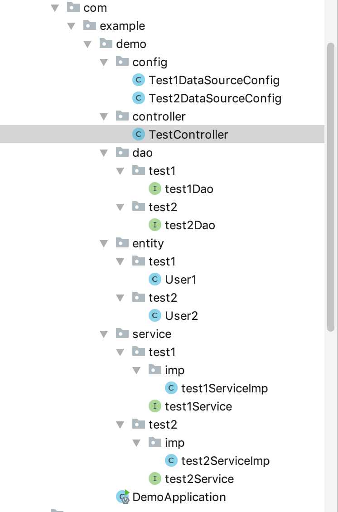
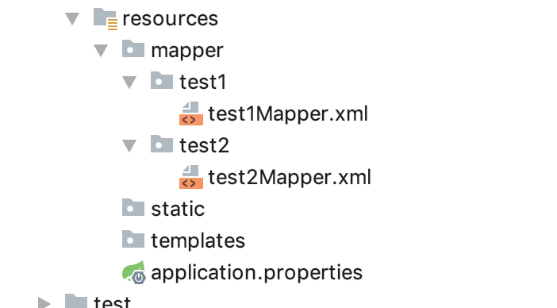

springboot多数据库的使用：使用多个dataSourceConfig(多个SqlSessionFactory)实现
流程：在application.properties中配置多个数据库信息，建立对应的 dataSource配置文件，在不同的配置文件中配置不同的SqlSessionFactory、 DataSourceTransactionManager、SqlSessionTemplate， 指定扫描不同 sqlSessionTemplateRef的对应包。
当访问不同的url时，根据不同的service, 找到对应的mapper, 根据mapper 所在的包找到不同的sqlSessionTemplateRef, 对应不同的SqlSessionFactory, 从而加载不同的实例化出来的数据源。
pom.xml
<dependency>
<groupId>org.springframework.boot</groupId>
<artifactId>spring-boot-starter-web</artifactId>
</dependency>
<!--mysql-->
<dependency>
<groupId>mysql</groupId>
<artifactId>mysql-connector-java</artifactId>
<version>8.0.15</version>
<scope>runtime</scope>
</dependency>
<!--jpa-->
<dependency>
<groupId>org.springframework.boot</groupId>
<artifactId>spring-boot-starter-data-jpa</artifactId>
</dependency>
<dependency>
<groupId>org.mybatis.spring.boot</groupId>
<artifactId>mybatis-spring-boot-starter</artifactId>
<version>2.0.1</version>
</dependency>
<!--druid-->
<dependency>
<groupId>com.alibaba</groupId>
<artifactId>druid</artifactId>
<version>1.1.0</version>
</dependency>
<!--lombok-->
<dependency>
<groupId>org.projectlombok</groupId>
<artifactId>lombok</artifactId>
<optional>true</optional>
</dependency>
<dependency>
<groupId>org.springframework.boot</groupId>
<artifactId>spring-boot-starter-thymeleaf</artifactId>
</dependency>
<dependency>
<groupId>org.springframework.boot</groupId>
<artifactId>spring-boot-starter-test</artifactId>
<scope>test</scope>
</dependency>
application.properties
#jdbcUrl可以写成jdbc-url，不能写成jdbc.url或url。url或url
#driverClassName可以写成driver-class-name，不能写成driver.class.name
#test1数据库配置
test1.spring.datasource.jdbcUrl=jdbc:mysql://localhost:3306/test1?createDatabaseIfNotExist=true&useUnicode=true&characterEncoding=UTF-8
test1.spring.datasource.username=root
test1.spring.datasource.password=czyczy1212
test1.spring.datasource.driverClassName=com.mysql.jdbc.Driver
#test2数据库配置
test2.spring.datasource.jdbcUrl=jdbc:mysql://localhost:3306/test2?createDatabaseIfNotExist=true&useUnicode=true&characterEncoding=UTF-8
test2.spring.datasource.username=root
test2.spring.datasource.password=czyczy1212
test2.spring.datasource.driverClassName=com.mysql.jdbc.Driver
#logback
logging.level.root=info
logging.level.org.springframework.web=warn
logging.level.org.apache.tomcat=warn
logging.level.com.example.demo=debug
不同数据库对应的数据库配置文件
启动时默认的数据库：
package com.example.demo.config;
import org.apache.ibatis.session.SqlSessionFactory;
import org.mybatis.spring.SqlSessionFactoryBean;
import org.mybatis.spring.SqlSessionTemplate;
import org.mybatis.spring.annotation.MapperScan;
import org.springframework.beans.factory.annotation.Qualifier;
import org.springframework.boot.context.properties.ConfigurationProperties;
import org.springframework.boot.jdbc.DataSourceBuilder;
import org.springframework.context.annotation.Bean;
import org.springframework.context.annotation.Configuration;
import org.springframework.context.annotation.Primary;
import org.springframework.core.io.support.PathMatchingResourcePatternResolver;
import org.springframework.jdbc.datasource.DataSourceTransactionManager;
import javax.sql.DataSource;
//配置数据库1
@Configuration
//指定该SqlSession对象对应的dao(basePackages , dao扫包 sqlSessionFactoryRef: SqlSessionFactory对象注入到该变量中)
@MapperScan(basePackages = "com.example.demo.dao.test1",
sqlSessionTemplateRef = "test1SqlSessionTemplate")
public class Test1DataSourceConfig {
//封装数据源对象创建, 该方法就已经将数据源的各个数据封装到该对象中
@Primary //指定启动是默认使用的数据源
@Bean(name = "test1DataSource")
//读取数据源前缀
@ConfigurationProperties(prefix = "test1.spring.datasource")
public DataSource dataSource(){
return DataSourceBuilder.create().build();
}
//创建sqlsessionfactory
@Bean(name = "test1SqlSessionFactory")
@Primary
public SqlSessionFactory test1Factory(
@Qualifier("test1DataSource") DataSource dataSource)
throws Exception{
SqlSessionFactoryBean bean = new SqlSessionFactoryBean();
//指定起别名的包
bean.setTypeAliasesPackage("com.example.demo.entity");
bean.setDataSource(dataSource);
//指定该SqlSession对应的mapper.xml文件位置
bean.setMapperLocations(new PathMatchingResourcePatternResolver()
.getResources("classpath:mapper/test1/*.xml"));
return bean.getObject();
}
//创建事务
@Bean(name = "test1TransactionManager")
@Primary
public DataSourceTransactionManager test1TransactionManager(
@Qualifier("test1DataSource") DataSource dataSource
) throws Exception{
return new DataSourceTransactionManager(dataSource);
}
//创建sqlSessionTemplate
@Bean(name = "test1SqlSessionTemplate")
@Primary
public SqlSessionTemplate test1SqlSessionTemplate(
@Qualifier("test1SqlSessionFactory") SqlSessionFactory sqlSessionFactory
) throws Exception{
return new SqlSessionTemplate(sqlSessionFactory);
}
}
第二个数据库:
package com.example.demo.config;
import com.alibaba.druid.pool.DruidDataSource;
import org.apache.ibatis.session.SqlSessionFactory;
import org.mybatis.spring.SqlSessionFactoryBean;
import org.mybatis.spring.SqlSessionTemplate;
import org.mybatis.spring.annotation.MapperScan;
import org.springframework.beans.factory.annotation.Qualifier;
import org.springframework.boot.context.properties.ConfigurationProperties;
import org.springframework.boot.jdbc.DataSourceBuilder;
import org.springframework.context.annotation.Bean;
import org.springframework.context.annotation.Configuration;
import org.springframework.context.annotation.Primary;
import org.springframework.core.io.support.PathMatchingResourcePatternResolver;
import org.springframework.jdbc.datasource.DataSourceTransactionManager;
import javax.sql.DataSource;
@Configuration
//扫描dao下面的test2
@MapperScan(basePackages = "com.example.demo.dao.test2",
sqlSessionTemplateRef = "test2SqlSessionTemplate")
public class Test2DataSourceConfig {
@Bean(name = "test2DataSource")
@ConfigurationProperties(prefix = "test2.spring.datasource")
public DataSource dataSource(){
return DataSourceBuilder.create().build();
}
@Bean(name = "test2SqlSessionFactory")
public SqlSessionFactory sqlSessionFactory(@Qualifier("test2DataSource")
DataSource dataSource) throws Exception{
SqlSessionFactoryBean bean = new SqlSessionFactoryBean();
bean.setTypeAliasesPackage("com.example.demo.entity");
bean.setDataSource(dataSource);
bean.setMapperLocations(new PathMatchingResourcePatternResolver().getResources("classpath:mapper/test2/*.xml"));
return bean.getObject();
}
//创建事务
@Bean(name = "test2TransactionManager")
@Primary
public DataSourceTransactionManager test1TransactionManager(
@Qualifier("test2DataSource") DataSource dataSource
) throws Exception{
return new DataSourceTransactionManager(dataSource);
}
//创建sqlSessionTemplate
@Bean(name = "test2SqlSessionTemplate")
@Primary
public SqlSessionTemplate test1SqlSessionTemplate(
@Qualifier("test2SqlSessionFactory") SqlSessionFactory sqlSessionFactory
) throws Exception{
return new SqlSessionTemplate(sqlSessionFactory);
}
}
各层结构分别建子包进行区分,项目结构如下:
 编写控制器测试
package com.example.demo.controller;
import com.example.demo.entity.test1.User1;
import com.example.demo.entity.test2.User2;
import javafx.geometry.Pos;
import org.springframework.beans.factory.annotation.Autowired;
import org.springframework.web.bind.annotation.RequestBody;
import org.springframework.web.bind.annotation.RequestMapping;
import org.springframework.web.bind.annotation.RequestMethod;
import org.springframework.web.bind.annotation.RestController;
import com.example.demo.service.test1.test1Service;
import com.example.demo.service.test2.test2Service;
@RestController
public class TestController {
@Autowired
private test1Service ts1;
@Autowired
private test2Service ts2;
/**
* http://localhost:8080/savets1
* Content-Type:application/json
* {
* "id":0,
* "name":"1212xx1x"
* }
*
* */
@RequestMapping(value = "savets1", method = RequestMethod.POST)
public int test1DataSource(@RequestBody User1 user1){
System.out.println("user1 = " + user1);
return this.ts1.save(user1);
}
/**
* http://localhost:8080/savets1
* Content-Type:application/json
* {
* "id":0,
* "name":"1212xx1x"
* }
* */
@RequestMapping(value = "savets2", method = RequestMethod.POST)
public int test2DataSource(@RequestBody User2 user2){
return this.ts2.save(user2);
}
}